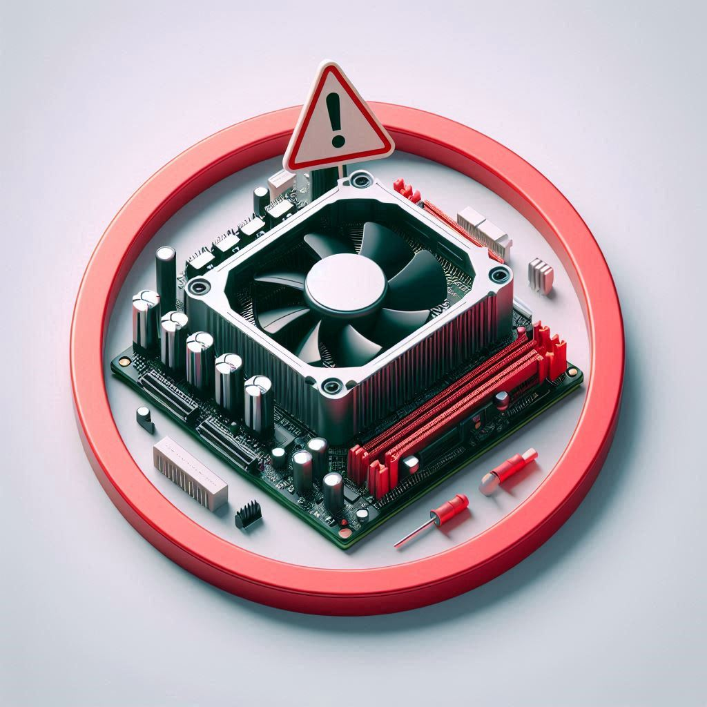
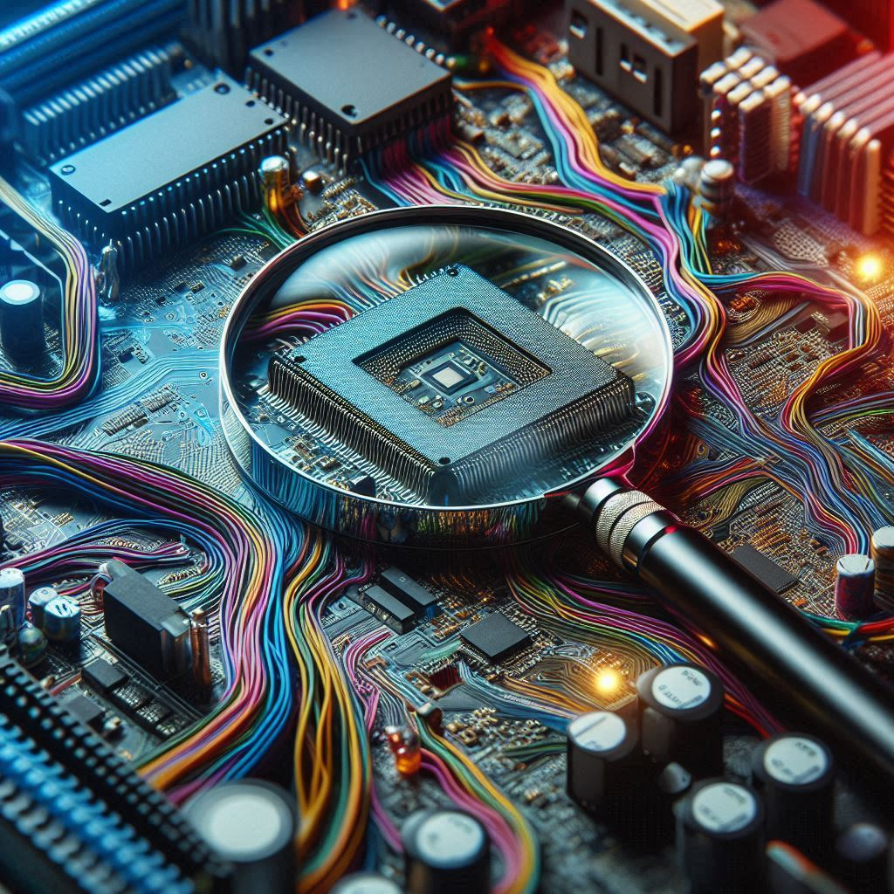

TechSupport
Soluciones Para Computadoras
Barra de Búsqueda
Buscar
Más Buscados
Temperuras Altas: Los signos de un ordenador sobrecalentado incluyen un dispositivo caliente al tacto, un ventilador que funciona a toda marcha y fuertes zumbidos procedentes del equipo
Polvo:La acumulación de polvo puede afectar el rendimiento de tu computador. Ocasiona que los componentes de tu computador adquieran cierta temperatura, disminuyendo así la eficiencia de todo el sistema
Armar el Gabinete: El rol del Gabinete es asesorar al presidente sobre cualquier tema que él requiera relacionado con los deberes de cada miembro de su respectiva oficina.
Lento Rendimiento: Gracias al administrador de tareas de Windows podremos saber qué programasse están ejecutando actualmente en tu ordenador y cuánta CPU y memoria están requiriendo.

Mal funcionamiento de un componente: Las fallas pueden ser causadas por exceso de temperatura, exceso de corriente o voltaje, radiación ionizante, choque mecánico, estrés o impacto y muchas otras causas.
Mal funcionamiento de un componente: Las fallas pueden ser causadas por exceso de temperatura, exceso de corriente o voltaje, radiación ionizante, choque mecánico, estrés o impacto y muchas otras causas.

Problema con el Hardware: Un error de hardware es un mal funcionamiento de un componente de hardware en un sistema informático. Estos pueden detectar cuándo existe una condición de error de hardware.
Soporte: Telefono: +543512370855 Whatsapp: +543515060828 Email: teoparise@techsupport.com